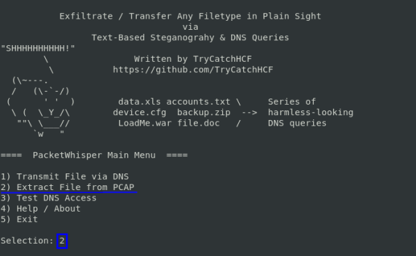
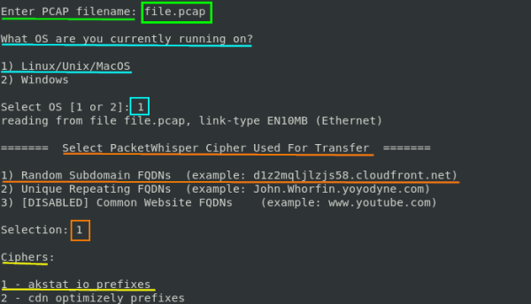
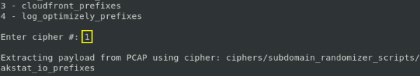
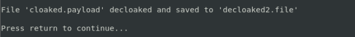

decrypt exfiltrated file
From the Kali Linux machine:
position in the folder of PacketWhisper where we also saved the file.pcap of wireshark and lauch PacketWhisper
python packetWhisper.py




And finally we have the decrypted file: